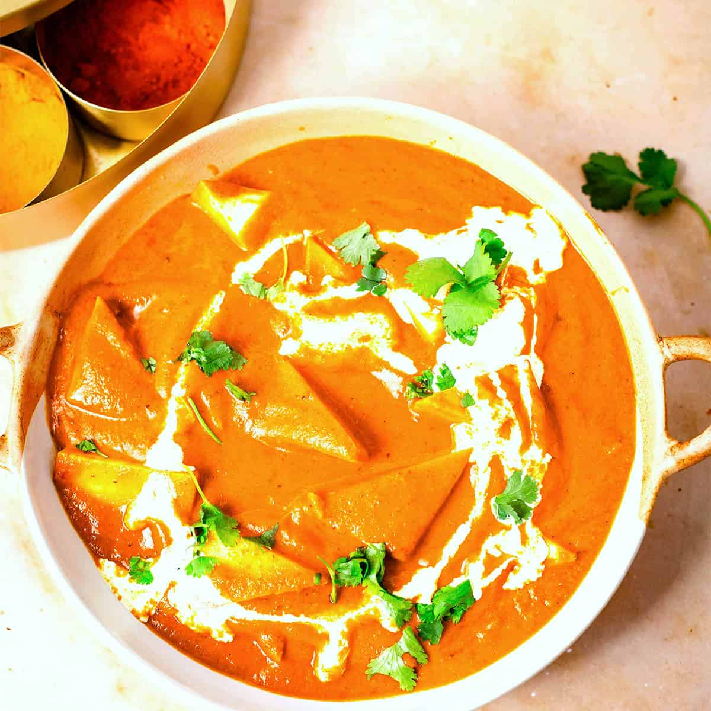

Shahi Paneer

Description
Shahi Paneer is a very aromatic dish with cardamom, saffron, cloves, fenugreek, cashews, cream, and soft Paneer. Some people do add fruits, rose petals/rose water and Khoya (Milk Solids) too. You can add them if you like. I like to Cashews, Saffron, Cream and whole Spices.
Ingrdients
- Saffron
- Green and Black Cardamom
- Cinnamon
- Bay Leaf
- Kasuri Methi (Dry Fenugreek)
- Cumin Seeds and Cloves
- Onion
- Cashews
- Oil and Ghee
- Garlic, Ginger and Green Chillies
- Plum Tomatoes
- Ground Spices and Salt
- Paneer
- Double Cream
Steps :
- Crush the Saffron and dry roast in a pan
- Soak 10 Cashews in water for 15 - 20 minutes
- Heat Ghee and Oil in a large pan
- Add the whole spices
- Allow to sizzle for 30 seconds till aromatic
- Add the Onions
- Stir in Ginger, Garlic and Green Chillies and saute
- Pour in the Tomatoes and Tomato puree
- Add the Salt, Turmeric powder, Red Chilli powder and Kasuri Methi
- Add the Paneer and Cardamom Powder
Home